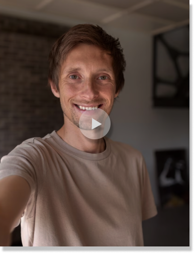

Ophold
Vi tilbyder professionel dyrepassning, når du har brug for det, så dit kæledyr altid er i trygge hænder.
Pension og pasning til dit dyr
Få din hund i pension eller passet hos Sejr & Davidsens dyrepension. Vi giver dyreejere et trygt og professionelt sted at efterlade deres dyr i afgrænset perioder.
Den almene pasning drives med hjælp fra et antal frivillige, der har stor kærlighed til dyr og brænder for at de har det godt.
Pasning
Pris for pasning: 75,- pr. time
Inklusiv mad og gåtur
Pension
Pris for pension: 295,-
Inklusiv mad og tre gåture pr. dag

Hvorfor vælge os?
Vores team af dedikerede eksperter bringer erfaring og relevant uddannelse med sig, hvilket betyder, at dit kæledyr vil modtage den mest kvalificerede og omsorgsfulde pleje. Vores frivillige er nøje oplært til at sikre, at alle dyrene her får den opmærksomhed og kærlighed, de fortjener. Vælg os for den ultimative oplevelse af pleje og tryghed for din pelsede ven.
RådgivningSådan ser en typisk dag ud for din hund i pension:
- Første gåtur gennem skoven
- Morgenmad
- Lang gåtur om eftermiddagen
- En godbid efter den lange gåtur.
- Aftensmad
- Dagens sidste gåtur Dyrepensions aftenvagt sørger for, at alle hundene er kommet godt op i kurvene inden der lukkes af for natten.
Kundeanmeldelser
Hør vores dyreejere og adoptanters oplevelser med adoption, ophold og træning af deres dyr.
- 
-

-